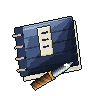
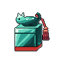
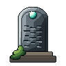
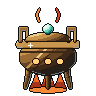
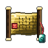
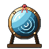
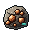
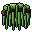

Works of the Post

✓
Post Arts
14 points to spend

Seals
2 can be inscribed now

Steles
Delving Lv 1
Flags
1 of 2 · Reed Shallows

Furnace
Cinnabar line lit · refined 4 / 20

Favours
after The County Tribute,
for Magistrate Qian
for Magistrate Qian

Mirror
after Echoes in Bronze,
for Elder Hu
for Elder Hu
Seal Scriptspaid from the Storehouse · each character draws as far as its craft level

Inscribe

Inscribe
Inscribe
Inscribe
Inscribe
What your works add
for Tester, at every post
Tool power +0.3 · Stele Lv 1
Finesse +3 · Seal Lv 1
Nothing yet
Craft Diligence +0.49%
from the Dreaming Artisan
from the Dreaming Artisan
Craft Diligence +1.0% · plain flag Lv 0
In the Storehouse
58
43
4
Copper, Willow Moss, Spirit Wood, Cinnabar Salt, Jade Frog
Steles take silver and ore; seals take Storehouse goods.